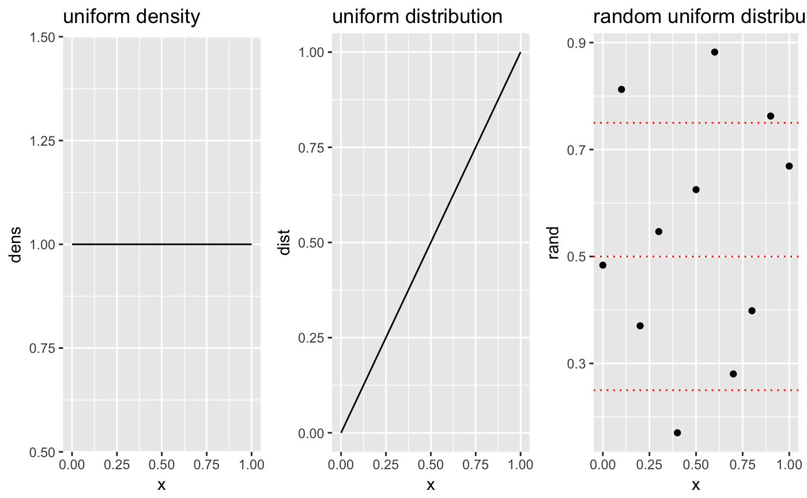

Introduction
The code in this package is stored in the ‘meerkat’ package. It contains helper functions that are not exported and for which no visible documentation was written. At the start of each part, I give a link to the R-code hosted on GitHub where you can view the code.
PART I
View the code belonging to this assignment here
1. Assuming that the data are approximately normal, simulate one sample of data and perform a t-test using the R in-built t-test function. What is the p-value of the test? What is your conclusion?.
rm(list=ls())
library(meerkat)
# Set values and draw a sample
n <- 50
mu <- 160
mu0 <- 150
sd <- 15
set.seed(600)
x <- rnorm(n, mu, sd)
set.seed(500)
y <- rnorm(n, mu0, sd)
# We perform a t-test on the data
t.test(x, y, alternative="greater", var.equal = TRUE)##
## Two Sample t-test
##
## data: x and y
## t = 3.7003, df = 98, p-value = 0.0001778
## alternative hypothesis: true difference in means is greater than 0
## 95 percent confidence interval:
## 6.154347 Inf
## sample estimates:
## mean of x mean of y
## 160.6356 149.4711The one-tailed test is statistically significant (p<0.001). At a significance level of a=0.05 we would therefore reject the null that there is no difference in the test scores of these groups. The experimental group , it would seem, performed better than the control and the special training has had the desired effect.
2. Assume that the data are normally distributed, write a function that generates data and performs a t-test 1000 times and that stores the values of the t-statistic (or the p-value) in a vector. Thinking about the definition of power in terms of rejecting the null hypothesis, how would you obtain an estimate of the power in this situation? Compare your results with those given by power.t.test
Power is defined as the probability \(\pi(\theta)\) of rejecting the null hypothesis given that the alternative hypothesis is true.1. The probability of making a Type II error (wrongfully concluding that there is no effect while an effect exists) is \(1-\pi(\theta))\). A common maximum value for the Type II error is that we should not commit it in more than 20% of cases. Hence, the ‘minimum’ power we should strive for is \(0.8\), meaning that we can detect effects \(4\) out of \(5\) times.
The function emp_power() calculates, for a given \(R\) number of repititions, the t-statistic between the mean value of the control group and that of a random sample drawn from the normal distribution. Given that we are interested in the probability \(\pi(\theta)\), a reasonable approach is to take the proportion of cases where the null hypothesis is rejected. In this case, if the true difference of means is \(0\), we would still expect to achieve a power of 5% because of the Type I error rate. As we increase the difference in mean values, we expect the power (or the percentage of significant t-tests) to increase.
Furthermore, given that we draw data from a normal distribution and for values where \(\theta_0 < \theta_1\), we may be confident that the power of our test increases as we:
- increase the sample size
- increase the significance level \(\alpha\) (e.g. from \(0.05\) to \(0.1\))
- decrease the standard deviation in the sample
The effect of changing these values is shown in the plots below
library(ggplot2)
library(grid)
library(gridExtra)
# Define a grid of possible mean values from 140 to 160
grids <- list(
grid_mu = seq(140, 160, 1),
grid_sd = seq(5, 15, 0.5),
grid_alpha = seq(0.01, 0.11, 0.005),
grid_n = seq(50, 150, 5)
)
grids_out <- vector("list", length = 4)
# For each value, calculate the power of the t-test while holding the other parameters constant
for( i in seq_along(grids) ) {
# Get name
grids_in_name <- names(grids)[i]
grid <- grids[[i]]
# This switch is a wrapper for a bunch of if/else statements
power_values <- switch(grids_in_name,
grid_mu = lapply(grid, function(x) emp_power(50,
x,
15,
R=1000,
type="two_sample",
alpha=0.05,
alternative="greater",
mu0=150)),
grid_n = lapply(grid, function(x) emp_power(x, 155, 15, R=1000,
type="two_sample", alpha=0.05,
alternative="greater", mu0=150)),
grid_sd = lapply(grid, function(x) emp_power(50, 155, x, R=1000,
type="two_sample",alpha=0.05,
alternative="greater", mu0=150)),
grid_alpha = lapply(grid, function(x) emp_power(50, 155, 15, R=1000,
type="two_sample",alpha=x,
alternative="greater", mu0=150))
)
# Get values
pv <- sapply(power_values, function(x) x$power)
# In data frame
df <- data.frame("grid" = grid,
"power" = pv,
"se" = sapply(power_values, function(x) x$se))
# Plot
grids_out[[i]] <- ggplot(df, aes(x=grid, y=power)) +
geom_line() +
geom_point() +
geom_errorbar(aes(ymin=power - se, ymax=power + se)) +
theme_bw() +
scale_x_continuous(name = strsplit(grids_in_name, "_")[[1]][2]) +
scale_y_continuous(name = "Power")
}
# Plot
grid.arrange(grids_out[[1]], grids_out[[2]],
grids_out[[3]], grids_out[[4]],
ncol=2, nrow=2)Change in statistical power when all parameters are held constant except the one on the x-axis for each plot
If we compare the results from the empirical test to the R function, we observe:
power.t.test(n=50, delta=10, sd=15, type="two.sample",
sig.level = 0.05, alternative="one.sided")##
## Two-sample t test power calculation
##
## n = 50
## delta = 10
## sd = 15
## sig.level = 0.05
## power = 0.952077
## alternative = one.sided
##
## NOTE: n is number in *each* groupand
set.seed(700)
emp <- emp_power(n=50, mu=160, mu0=150, sd=15,
alpha=0.05, type="two_sample",
alternative="greater", R=1000)
emp$power## [1] 0.954This gives us a comparable power estimation.
PART II
View the code belonging to this assignment here
- Choose an appropriate resampling technique and make a function that performs a hypothesis test based on the t-statistic produced by the standard t-test function. Use the in-built sample() function to perform the resampling of the data. Include relevant statistics in your function and give the function a clear structure (choose sensible input arguments, organize the output in an efficient way, add comments, etc). Show the results of your resampling technique on the Flight instruction data.
We begin by specifying the data
# Create variables for flight simulation data
CSFI <- c(2,5,5,6,6,7,8,9)
TFI <- c(1,1,2,3,3,4,5,7,7,8)If we assume that the variances are equal, we can apply a two-sample t-test using the permutation method.2
# Run
set.seed(1200)
pt <- permutation_test(CSFI, TFI, 999)
pt## Two-tailed permutation test using 18 observations and 999 permutations
##
## K R t p
## -----------------------------------
## 18 999 1.68 0.132plot(pt)
t.test(CSFI, TFI, var.equal = TRUE)##
## Two Sample t-test
##
## data: CSFI and TFI
## t = 1.6805, df = 16, p-value = 0.1123
## alternative hypothesis: true difference in means is not equal to 0
## 95 percent confidence interval:
## -0.4967883 4.2967883
## sample estimates:
## mean of x mean of y
## 6.0 4.1The results lead to the same conclusion, although the p-value obtained using the permutation test is 15% higher.
- How would you program the drawing of random samples when you do not want to use the sample() function? Modify the function you have programmed in (1) in such a way that it does not use the sample() function anymore. Run your new function and show that you can obtain the same results as in (1).
We can use the R function runif() to draw values from the uniform distribution.
set.seed(100)
# This draws 5 values from a uniform with a=0 and b=1
runif(5)## [1] 0.30776611 0.25767250 0.55232243 0.05638315 0.46854928If we wanted \(80\)% of our rows randomly sampled, then we subset the probabilities generated by the uniform distribution such that they are below \(0.8\). This works because, we know that, if a random variable \(X\) has a uniform density with \(a, b \in \mathbb{R} \implies P\left[X < a + P(b - a)\right] = P\).
# Sample from the density from 0 to 1
library(ggplot2)
library(gridExtra)
x <- seq(0, 1, 0.1)
df <- data.frame(x=x, dens=dunif(x, 0, 1), dist=punif(x,0,1), rand = runif(length(x), 0, 1))
p1 <- ggplot(df, aes(x=x, y=dens)) + geom_line() + ggtitle("uniform density")
p2 <- ggplot(df, aes(x=x, y=dist)) + geom_line() + ggtitle("uniform distribution")
p3 <- ggplot(df, aes(x=x, y=rand)) + geom_point() + ggtitle("random uniform distribution values") +
geom_hline(yintercept = 0.25, col = "red", linetype = 3) +
geom_hline(yintercept = 0.5, col = "red", linetype = 3) +
geom_hline(yintercept = 0.75, col = "red", linetype = 3)
grid.arrange(p1, p2,p3, ncol=3)
In the third plot above, we see that approximately 50% of the data lies below the median and 50% lies above it. Hence, if we wanted to sample 80% of our data, we would expect that proportion to be correct on average due to the randomness of the draws.
In the permutation_test() function, we can specify whether we want to sample this way using the use_sample() flag. As shown above, there is always a chance that we will draw a sample that is few in number of observations. To make sure that this does not happen, we impose the rule that the proportion of observations may not be above or below one standard error away from the proportion. If this happens, then the function calls itself recursively until the proportion is within acceptable bounds. The bounds may be increased or decreased using the tolerance parameter; the smaller this parameter is, the more we compress the ‘acceptable’ region around the proportion.
set.seed(888)
pt <- permutation_test(CSFI, TFI, 999, use_sample = FALSE, tolerance = 1)
pt## Two-tailed permutation test using 18 observations and 999 permutations
##
## K R t p
## -----------------------------------
## 18 999 1.68 0.142set.seed(888)
pt <- permutation_test(CSFI, TFI, 999, use_sample = FALSE, tolerance = 0.5)
pt## Two-tailed permutation test using 18 observations and 999 permutations
##
## K R t p
## -----------------------------------
## 18 999 1.68 0.15set.seed(888)
pt <- permutation_test(CSFI, TFI, 999, use_sample = TRUE)
pt## Two-tailed permutation test using 18 observations and 999 permutations
##
## K R t p
## -----------------------------------
## 18 999 1.68 0.148We may observe different results using these different sampling procedures. This is because the group sizes may vary quite a bit. Moreover, by decreasing the tolerance value, we are resampling many more times because we are discarding many samples. I am not entirely sure how this works with the set.seed() function, but testing shows that the results can vary quite a bit. Clearly, this is quite a roundabout way of trying to get rid of the sample() function.
Another approach to sampling without using the sample() function is to draw values from the binomial distribution.
- Which resampling technique(s) would you use, if you would be interested in estimation instead of hypothesis testing? Make an R function that performs resampling for estimation purposes using the mean difference between two groups from the t-test function. Your function should produce all relevant aspects of estimation, and you should discuss these aspects and put them in perspective. Again use the Flight instruction data to show the results of your function.
View the code belonging to this assignment here
I would use bootstrapping to do this. Using bootstrapping, we can draw \(R\) samples with replacement from the original sample to construct an empirical sampling distribution. In this case, the quantity \(\theta\) of interest is the t-statistic.
set.seed(4500)
res <- boot_ttest(CSFI, TFI, R=2000)
res## 2000 bootstrapped two-tailed t-statistic values
##
## Bootstrap statistics :
## original bias std.error jack-after-boot
## 1.68 0.22 1.22 0.42
##
## Percentile bootstrap values :
## alpha lower upper
## 0.05 -0.13 4.57The boot_ttest() function returns a variety of statistics:
- The ‘original’ t-statistic is the value we get when we calculate the t-statistic for the input values.
- The bias indicates that, on average, we are over-estimating the t-statistic. This we can also observe from the histogram below, which is skewed to the right.
- The standard error is the bootstrap estimate of the sampling distribution standard error. We assess its variability using the jackknife-after-bootstrap estimate (‘jack-after-boot’). We observe that that the variability is rather high.
- The simple percentile bootstrap values (indicated with green dotted lines in the plot below) contain \(0\), which strengthens the conclusion we reached earlier when we failed to reject \(H_0\). The confidence intervals are close to the confidence intervals to those of the theoretical confidence intervals.
t.test(CSFI, TFI, var.equal = TRUE)##
## Two Sample t-test
##
## data: CSFI and TFI
## t = 1.6805, df = 16, p-value = 0.1123
## alternative hypothesis: true difference in means is not equal to 0
## 95 percent confidence interval:
## -0.4967883 4.2967883
## sample estimates:
## mean of x mean of y
## 6.0 4.1plot(res)Bootstrap distribution of replicates. The red vertical line represents the original t-statistic. The green lines indicate the values of the confidence intervals.
In summary, the above diagnostics show that there is a lot of uncertainty in our point estimate. This is not surprising, given that our sample size is very small.